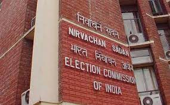
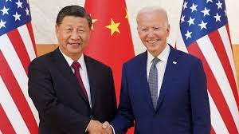

Goa News
PANAJI: Goa will snap prudence on its spending, including st ..
Delhi News
NEW DELHI: EC grands National party status to Aam Aadmi Party...
Read morePune News
Nine held for accepting bets on IPL in pune...
Read moreWorld News
Why US, Europe taking different routes to China...
Read more